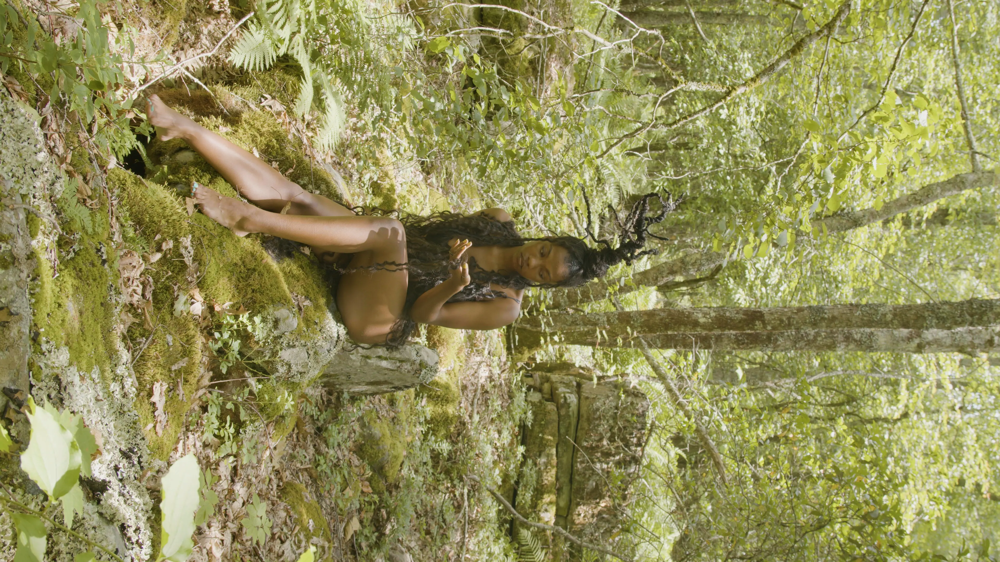
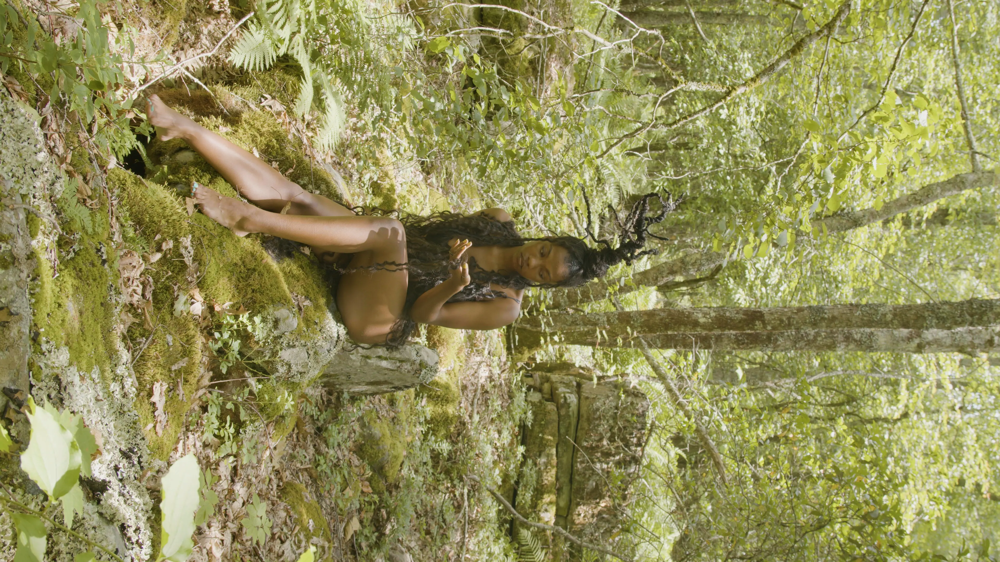

Rooted
Autumn Samone, in her series of images in Rooted, taken by Jolinna Li, creates a tree sculpture with synthetic hair, framing it alongside her body and the ethereal forest floor. Often considered “natural looking”, protective hair styles in black communities often use synthetic elements. Through these plays on what is considered “natural”, Samone connects the performance that is culturally integral to black identity to her own bodily performance in front of the camera.


 
